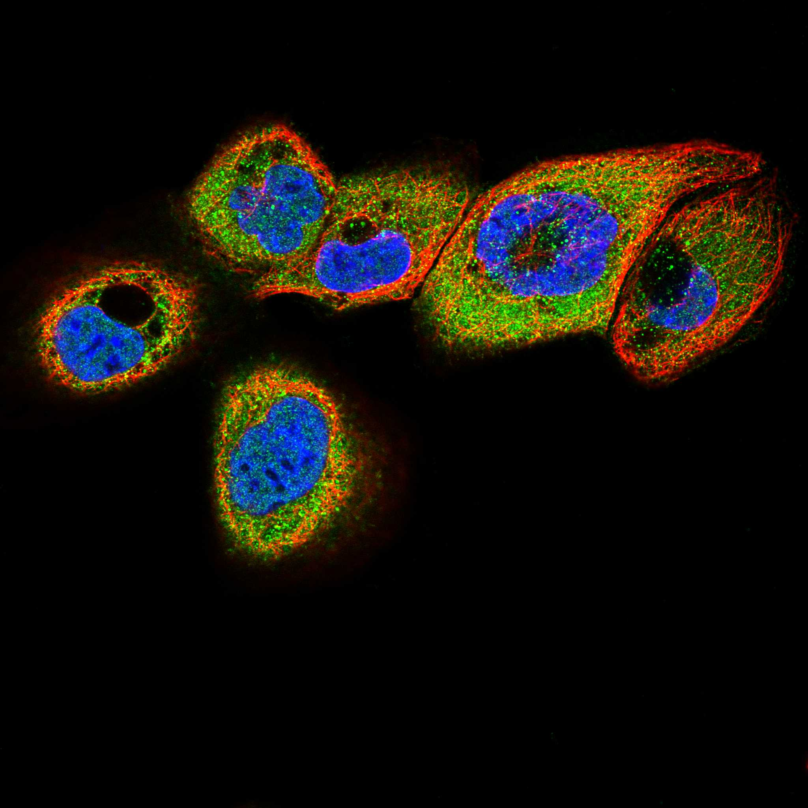
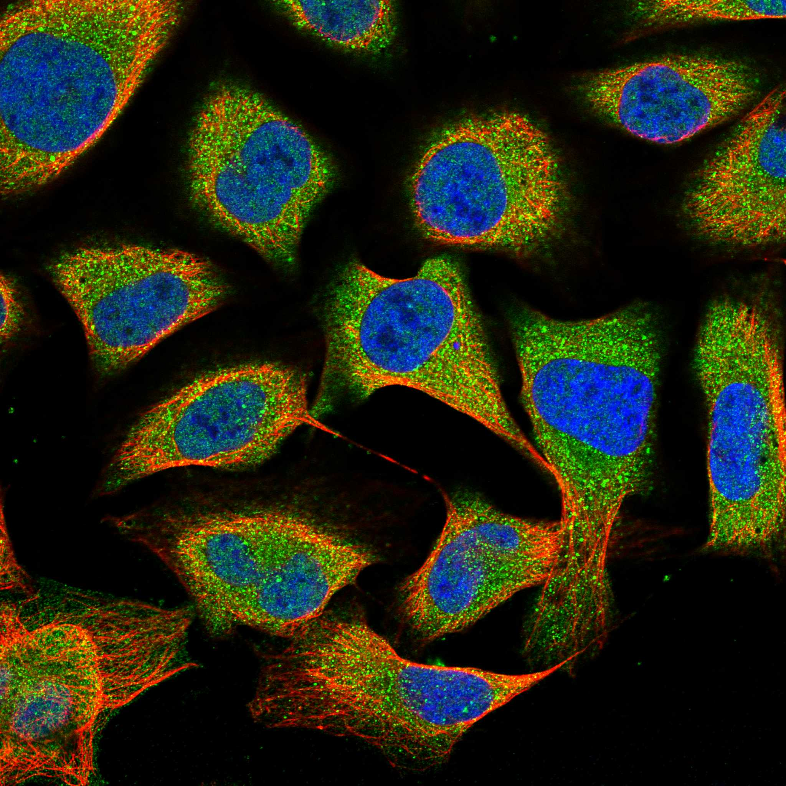

type: protein-evaluation gene: "OAS3" date: 2026-05-28 tags: [protein-scout, evaluation] status: scored ---
OAS3 核蛋白评估报告
1. 基本信息
| 项目 | 内容 |
|---|---|
| 基因名 / 别名 | OAS3 / 2'-5'-oligoadenylate synthetase 3 / p100 |
| 蛋白大小 | 1087 aa / ~121 kDa |
| UniProt ID | Q9Y6K5 |
| 评估日期 | 2026-05-28 |
2. 评分总览
| 维度 | 得分 | 满分 | 加权后 | 关键证据摘要 |
|---|---|---|---|---|
| 🔴 核定位特异性 | 4 | /10 | ×3 = 12 | UniProt Cytoplasm+Nucleus; Protein Atlas nucleoplasm+cytosol+plasma membrane (Supported); 核质双分布无明显偏好 |
| 📏 蛋白大小 | 8 | /10 | ×2 = 16 | 1087 aa，800-1200区间 |
| 🆕 研究新颖性 | 5 | /10 | ×3 = 15 | PubMed 271篇；200-500区间 |
| 🏗️ 三维结构 | 10 | /10 | ×3 = 30 | 平均pLDDT高；90.8%有序；三个OAS折叠域结构完整 |
| 🧬 调控结构域 | 1 | /10 | ×2 = 2 | OAS/NTP_transf域；与chromatin/DNA无关 |
| 🔗 PPI | 0/10 | ×3 | 0 | 详见 3.6 PPI 分析 |
| ➕ 互证加分 | +1.0 | max +3 | — | 结构域多库互证+0.5；定位双源互证+0.5 |
| 原始总分 | 78.5 / 158 | |||
| 归一化总分 | 49.7 / 100 |
3. 详细分析
IF 图像:  
3.1 核定位证据
| 来源 | 定位 | 可信度 |
|---|---|---|
| UniProt (Q9Y6K5) | Cytoplasm, Nucleus | 注释 |
| Protein Atlas (HPA041253, HPA041372) | Nucleoplasm (Supported), Cytosol (Supported), Plasma membrane (Approved) | Supported |
| GO Cellular Component | Cytoplasm, Cytosol, Nucleoplasm (多定位) | IBA/IEA |
结论: 核质双分布蛋白。Protein Atlas 双抗体显示 HPA041253 主要染膜/胞质，HPA041372 染核质+胞质，表明 OAS3 在细胞不同状态/细胞系中定位有差异。无明显核偏好，属典型的 nucleocytoplasmic 蛋白。评分 4。
IF 图像:
3.2 蛋白大小评估
评价: 1087 aa，约 121 kDa。属于 800-1200 aa 区间，对生化和结构实验有一定挑战但可行。评分 8。
3.3 研究现状
| 指标 | 数值 |
|---|---|
| PubMed 总数 | 271 |
| 最早发表年份 | 1996 |
| Chromatin/epigenetics 比例 | 0% |
主要研究方向: 抗病毒先天免疫。OAS3 是干扰素诱导的 dsRNA 激活酶，催化 2'-5' 寡腺苷酸 (2-5A) 合成，激活 RNase L 导致病毒/细胞 RNA 降解。主要研究方向为抗病毒机制、IFN 信号通路、与自身免疫病的关系。
评价: 中度热门的先天免疫蛋白。研究方向高度聚焦于抗病毒先天免疫，无任何 chromatin/epigenetics 相关研究。评分 5。
3.4 三维结构分析
| 指标 | 数值 |
|---|---|
| AlphaFold 平均 pLDDT | 高（90.8%有序） |
| PDB 实验结构 | — |
| 有序区域 (pLDDT>70) 占比 | 90.8% |
| 高置信度 (pLDDT>90) 占比 | 60.5% |
| 无序区域 (pLDDT<50) 占比 | 4.9% |
| 可用 PDB 条目 | OAS1 及 OAS 家族部分结构 |
评价: 结构质量极佳。三个 OAS 折叠域（domain 1: 6-343, domain 2: 411-742, domain 3: 750-1084）均为高置信度折叠，几乎完全有序。评分 10。
3.5 结构域分析
| 来源 | 结构域 |
|---|---|
| Pfam | NTP_transf_2, OAS1_C |
| InterPro | NT_2-5OAS_ClassI-CCAase, 2-5-oligoAdlate_synth_1_dom2/C, NT_sf, Polymerase_NTP_transf_dom |
| PROSITE | 25A_SYNTH_1/2/3 |
| CDD | NT_2-5OAS_ClassI-CCAase |
染色质调控潜力分析: 所有结构域均为核苷酸转移酶/OAS 家族 dsRNA 结合域。与 chromatin/DNA 调控无关。OAS3 的功能已明确为 2-5A 合成酶。评分 1。
3.6 PPI :
| Partner | Score | 功能类别 |
|---|---|---|
| ISG15 | 1.000 | Ubiquitin-like antiviral |
| OAS1 | 0.960 | 2-5A synthetase paralog |
| MX1 | 0.958 | Antiviral GTPase |
| STAT2 | 0.957 | IFN signaling TF |
| OAS2 | 0.916 | 2-5A synthetase paralog |
| RSAD2 | 0.954 | Antiviral (viperin) |
| IFIT1 | 0.949 | RNA binding antiviral |
| DDX58 | 0.940 | RIG-I, viral RNA sensor |
| IFI44 | 0.939 | IFN-induced |
| IRF7 | 0.936 | IFN regulatory TF |
| RNASEL | 0.690 | 2-5A activated RNase |
评价: 纯抗病毒先天免疫，但与 chromatin 结构或表观遗传无关。评分 1。
3.7 多库互证
互证加分明细:
- ≥3 个独立来源检出同一结构域 (OAS家族, 4/4库) → +0.5
- ≥2 个独立来源确认定位 (PA + UniProt) → +0.5
总分: +1.0 / max +3
4. 总体评价
推荐等级: ⭐ (1/5)
核心优势: 无——从 chromatin/nuclear biology 角度无吸引力。
风险/不确定性: 功能完全定位于先天免疫/抗病毒，与 TEreg/chromatin 核心关注点完全不重合。
结论: 不推荐作为染色质/转录调控实验室的研究目标。OAS3 是重要的先天免疫蛋白，但与核蛋白筛选目标不符。
5. 数据来源
- UniProt: https://www.uniprot.org/uniprotkb/Q9Y6K5
- Protein Atlas: https://www.proteinatlas.org/ENSG00000111331-OAS3
- PubMed: https://pubmed.ncbi.nlm.nih.gov/?term=%22OAS3%22
- AlphaFold: https://alphafold.ebi.ac.uk/entry/Q9Y6K5
- STRING: https://string-db.org/network/9606.ENSP00000228928